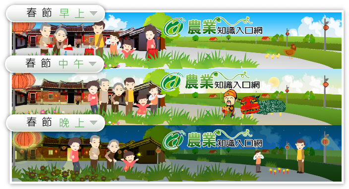
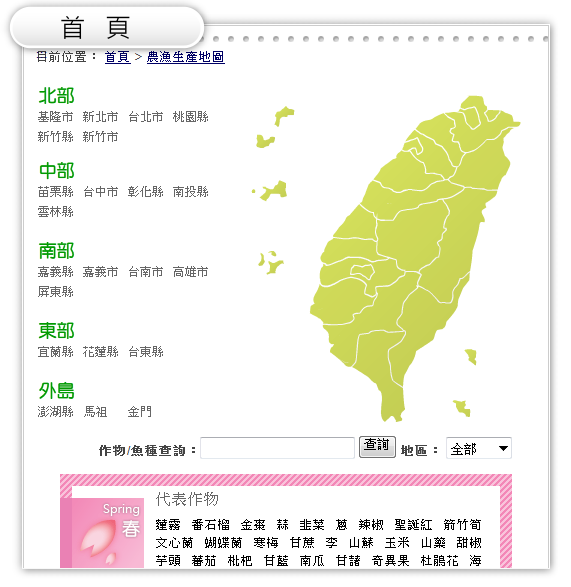
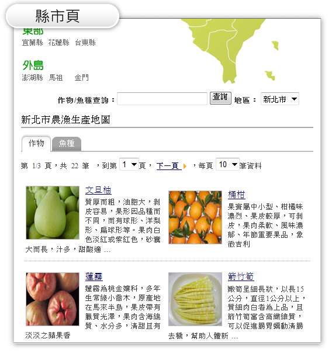
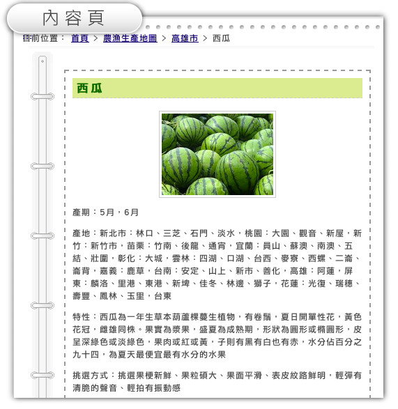
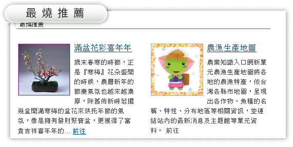
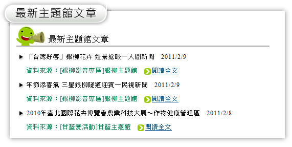
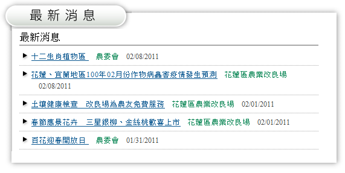
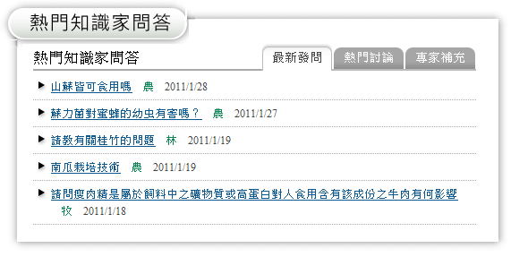
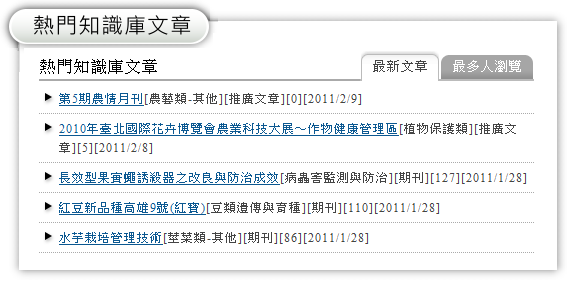

1
動態頁
新版的動態設計，將隨著時間與季節自動更換版面風格，瀏覽網站時能同時感受農業產業與時序息息相關。

3
搜尋服務
新版檢索服務提供貼心設計，讓您可針對特定單元進行搜尋，搜尋結果會以另開新網頁方式條列查詢結果。
4
24節氣
新版特別將與農業相關的24節氣，呈現於網站的左上方，讓您時時感受時節變化
5
農曆與國曆對應互換
新版提供農曆與國曆對應互換功能，可選擇或輸入(農/國)曆日期數字，
轉換成對應的(國/農)曆日期。
6
農漁生產地圖
將各地的農漁特產，依台灣各縣市地圖，呈現出各作物、魚種的名稱、特性、
分布地區等相關資訊，並連結站內的最新消息及主題館等單元資料。



7
RSS訂閱
新版網站提供貼心的RSS訂閱服務，讓您透過RSS Feed，直接訂閱有興趣的資訊之功能
8
最新資訊
新版網站首頁即時提供最新、最熱門的站內相關資訊，包括最燒推薦、最新主題館文章、最新消息等，並透過AJAX技術，動態呈現主題館和知識家、知識庫的最新、熱門等資訊。





9
會員服務
網站會員可享有分眾知識樹、農業知識家、評價與意見、以及訂閱電子報等網站服務，亦可參加網站不定期辦理的線上活動。
10
熱門關鍵字
新版網站提供關鍵字標籤雲，以字體大小及字體顏色深淺等變化，幫助使用者快且準備抓住關鍵字的流行趨勢。